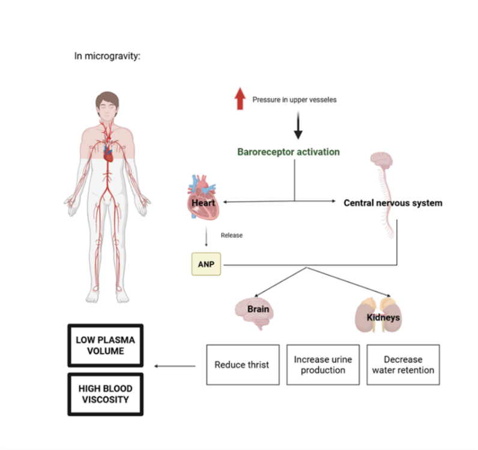

Module Introduction
As we have seen before, in microgravity blood shifts upwards towards the head and neck due to the loss of the gravity pull. This increase in fluid pressure in the upper body vessels is sensed by the nervous system and the heart, which release key hormones to stimulate diuresis (increased urine), limit water retention in kidneys and reduce thirst (fluid intake). This leads to overall fluid loss and, in consequence, decreased blood volume. Loss of plasma volume means that the blood proteins and cells are more concentrated, leading to increased blood viscosity. However, normal viscosity levels are restored overtime due to the loss of red blood cells in microgravity.
Research Cards — Click to Reveal
Question 01
01
How does the body sense changes in fluid pressure?
▶ TAP TO REVEAL
◀ Answer
The aorta and carotid arteries, which connect the heart to the head and upper body, have a specific set of mechanical sensing proteins known as baroreceptors. Baroreceptors are able to detect physical changes within the carotid vessels wall.
In microgravity, increased blood flow to the head means that the carotid arteries wall is overstretched. This is sensed by the baroreceptors, which interpret that there is too much blood coming through the heart. Activated baroreceptors send signals through the nervous system to the rest of the body to lower blood fluid volume and overall decrease blood flow.
TAP TO CLOSE ▶
Question 02
02
How do baroreceptors communicate to the rest of the body to reduce blood volume?
▶ TAP TO REVEAL
◀ Answer
Baroreceptors are connected to the central nervous system through two specific nerves (glossopharangeal nerve and vagus nerve) which flow directly onto the spinal cord. They activate the parasympathetic nervous system, which causes the heart to relax and reduce heart rest and vasodilation. They also send signals to the kidneys, increasing renal blood flow and urine secretion.
Baroreceptors in the heart can also trigger the release of the protein ANP (atrial natriuretic peptide), which acts: 1 — In the kidneys to decrease fluid and sodium reabsorption to promote urine and fluid secretion. 2 — In the brain, where it stops the thirst signals to reduce water intake. 3 — In the pituitary gland (endocrine system), to decrease the antidiuretic hormone (vasopressin, AVP), which normally stimulates fluid retention in kidneys, to drive increase urine secretion.
TAP TO CLOSE ▶
So, how does it work?

Diagram · Blood Volume & Viscosity Regulation